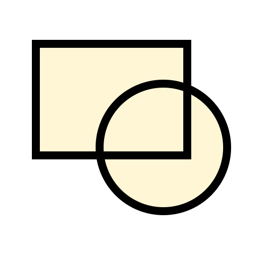

Menu: Blocco > Rinomina Blocco
Scorciatoia: B, N
Comandi: blockrename | bn
Descrizione:
Rinomina il blocco attivo. Con questa funzione si apre la stessa finestra della funzione per aggiungere un nuovo blocco. Il blocco ed i relativi inserimenti saranno rinominati.